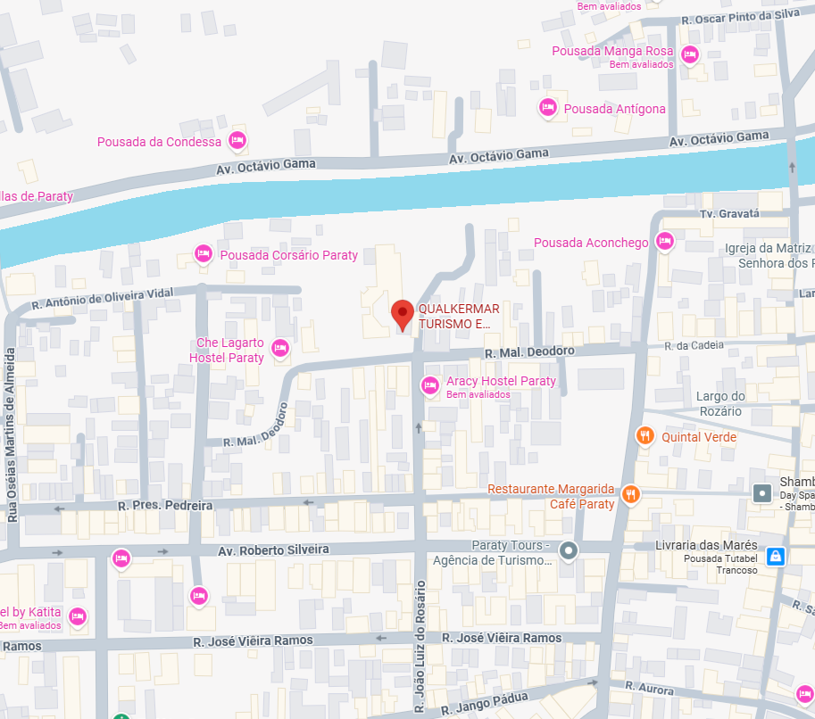

Sua Janela para o Paraíso de Paraty
Aluguel de lanchas privativas para passeios inesquecíveis pelas ilhas e praias mais deslumbrantes.
Conheça Nossas LanchasEscolha a Lancha Perfeita
Temos a embarcação ideal para seu grupo, combinando conforto, segurança e estilo. Lanchas com revisões em dia feita pela Direct Boat, a melhor autorizada Mercury.

Capitã Sofia
Cabinada com quarto e banheiro (fechado), solarium casal na proa, churrasqueira e ducha de água doce.

Capitão Enzo
Ideal para, desde casais até grupos maiores e travessias..

Capitão João
Banheiro (fechado), aconchegante sofá de proa, churrasqueira e ducha de água doce. Muito estável e segura por ter 2 cascos (Catamarã) e 2 motores
Roteiros Inesquecíveis
Criamos experiências únicas. Escolha um de nossos roteiros sugeridos ou personalize o seu dia perfeito no mar!


Roteiro Sul: Os Clássicos
Explore os cartões postais de Paraty. Um passeio por águas cristalinas e praias famosas por sua beleza.
Paradas: Praia Vermelha, Ilha da Pescaria, Ilha Comprida, Praia da Lula, Lagoa Azul, Ilha da Cotia, Saco da Velha, Ilha dos Cocos.


Roteiro Norte: Refúgios
Descubra os tesouros tranquilos e a beleza mais selvagem da Baía de Paraty, longe das rotas mais movimentadas.
Paradas: Ilha do Malvão, Ilha Comprida Norte, Ilha da Sapeca, Ilha do Araújo, Ilha do Ventura.


Especial: Saco do Mamanguá
Navegue pelo único fiorde tropical do Brasil. Um cenário de filme com águas calmas, ideal para um dia de paz e contemplação.
Paradas: Direto ao Saco do Mamanguá, Praia do Buraco, Praia do Sobrado, Praia do Engenho, Praia das Flores, Praia do Crepúsculo, Praia Grande, Praia da Paca, Praia do Guardamor.

Especial: Ilha do Cedro
Um paraíso particular. Desfrute da exclusividade e da beleza de uma das ilhas mais cobiçadas de Paraty, com praias de areia branca e mar calmo.
Monte seu Roteiro
O passeio é seu! Converse com nosso capitão e crie um roteiro 100% personalizado com os lugares que você mais sonha em conhecer.
Vamos Navegar?
Entre em contato, tire suas dúvidas e garanta a data do seu passeio. A aventura dos seus sonhos em Paraty está a uma mensagem de distância.
Endereço:
R. Mal. Deodoro, 582 - Centro, Paraty - RJ
